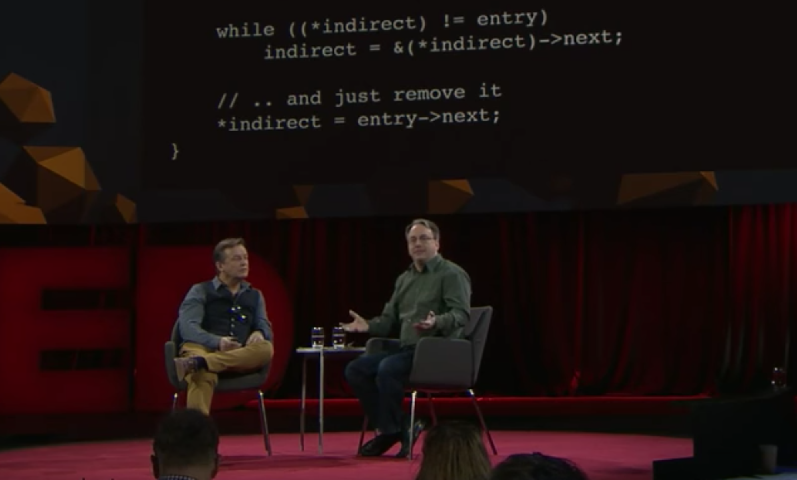

Aug 10, 2018

今天在YouTube上看了Linus Torvalds的一场TED，Linus拿了一小段代码来说明代码的taste问题。
代码很简单，就是在一个单向链表里删除一个指定节点，一般学校里教的写法都是像下面这样的：
void remove_list_entry(linked_list* entry) {
linked_list* prev = NULL;
linked_list* walk = head;
//Walk the list
while (walk != entry) {
prev = walk;
walk = walk->next;
}
// Remove the entry by updating the
// head or the previous entry
if (!prev) {
head = entry->next;
} else {
prev->next = entry->next;
}
}值得注意的是，在代码的结尾有一个if statement，这是用来区分两种情况的：
head，此时我们需要一个新的head，但是Linus认为这种写法是缺少taste的，他更喜欢下面的这种写法：
void remove_list_entry(linked_list* entry) {
// The "indirect" pointer points to the
// *address* of the thing we'll update
linked_list** indirect = &head;
// Walk the list, looking for the thing that
// points to the entry we want to remove
while ((*indirect) != entry)
indirect = &(*indirect)->next;
// .. and just remove it
*indirect = entry->next;
}与上面的写法不同，这里我们直接将需要被删除节点的后置节点的next地址复制到被删除节点的前置节点的next指针上，无需考虑被删除节点是否是head这个问题，从而也省去了第一段代码中的if statement，这毫无疑问是更加方便的做法。
下面说一下第二段代码的原理。
首先下面的是我们这里用到的linked_list的定义，普通的链表节点：
假设此时我们的链表中有5个节点，其内容分别是1/2/3/4/5，我们希望删除节点3。
head entry -+
| |
+-------+ +-------+ +-------+ +-------+ +--------+
| 1 | |---->| 2 | |---->| 3 | |---->| 4 | |---->| 5 |NULL|
+-------+ +-------+ +-------+ +-------+ +--------+linked_list** indirect = &head;这一行代码将会构造一个指向head指针的二级指针：
head entry -+
| |
+-------+ +-------+ +-------+ +-------+ +--------+
| 1 | |---->| 2 | |---->| 3 | |---->| 4 | |---->| 5 |NULL|
+-------+ +-------+ +-------+ +-------+ +--------+
^
|
+---+
| |
+---+
indirect接下来是一个while loop
首先我们解读(*indirect) != entry，一开始indirect指向head，而*indirect则等于head指针再被evaluate一次，那么就等价于链表的head，很显然此时的*indirect不等于entry，因为entry指向的是第三个节点。于是进入while loop执行indirect = &(*indirect)->next;，因为*indirect就等价于head，那么&(*indirect)->next就可以取得head的next指针所在的地址，这一行就相当于将head的next指针的地址赋给了indirect，如下图所示。
赋值结束后，我们又回到了判断条件(*indirect) != entry，此时indirect指向head的next指针，那么*indirect就相当于evaluate了head中next指针中所存储的地址，也就是第二个节点的地址。此时再判断，发现(*indirect) == entry依然不成立，继续执行while loop内部的代码。
head entry -+
| |
+-------+ +-------+ +-------+ +-------+ +--------+
| 1 | |---->| 2 | |---->| 3 | |---->| 4 | |---->| 5 |NULL|
+-------+ +-------+ +-------+ +-------+ +--------+
^
|
+---+
| |
+---+
indirect同样地，这次indirect = &(*indirect)->next会将indirect指向下一个节点的next指针，也就是第二个节点的next指针，如下图所示。此时再回到while loop的判断条件(*indirect) != entry，我们发现*indirect就等价于第二个节点的next指针，也就是第三个节点，也就是entry，于是退出while loop。
head entry -+
| |
+-------+ +-------+ +-------+ +-------+ +--------+
| 1 | |---->| 2 | |---->| 3 | |---->| 4 | |---->| 5 |NULL|
+-------+ +-------+ +-------+ +-------+ +--------+
^
|
+---+
| |
+---+
indirect最后执行*indirect = entry->next;，由于indirect指向第二个节点的next指针，所以*indirect则等价于第二个节点的next指针，所以实际上这行代码就是将第二个节点的next指针指向entry的下一个元素，从而完美地将entry从链表中删去。
entry -+
head |
+-------+ +-------+ +-------+ +-------+ +--------+
| 1 | |---->| 2 | |-- | 3 | |---->| 4 | |---->| 5 |NULL|
+-------+ +-------+ \ +-------+ +-------+ +--------+
*indirect \ /
+------------+第一次看到Linus的这种写法时，确实觉得非常惊艳，不过我还是对于这段代码保持一个中立的态度。首先，我们可以通过在头部增加一个dummy node，以这种更易读的方式来完成这项任务；其次，从现实世界的软件工程来看，这样的代码未必是最能提高生产力的代码。不过尽管如此，我还是从这个视频里看到了非常珍贵的东西，那就是对代码的追求以及对固有思维的打破。事实上，很多人会忘记对自己已经学到的代码进行思考，把它们当作理所当然的事。比如只会用学校里教的那种最古板的办法去删除链表中的节点，却不去思考这种方式有没有提升的空间。而这又可以拓展到更大的语境下，那些一两年前你认为是对的事情，现在的你是否有重新思考过它们呢？还是你会理所当然地相信曾经相对幼稚的你得到的结论呢？推特上那个Richard Feynman的账号很有意思，其中有一条我很喜欢的推：
Learn. Unlearn. Relearn.
Unlearn？听起来会不会有点熟悉，是啊，Master Yoda训练Luke的时候也说提到过这个词。Unlearn很重要，在我看来，第一次的那个Learn，我更愿意称之为模仿，你模仿你的老师，模仿书本上的知识，最后慢慢地入门。而Relearn才是你真正理解某个概念的本质的时候，我觉得这也是最容易出现创新的时候。
最后，请注意Linus最开始写出这段代码的动机，学校里教的那种方法，多了一个if statement。每个人都应该想想，对于你自己来说，这是“仅仅只是多了一个if statement罢了”，还是“这里居然有一个多余的if statement”呢？
Thanks to the discussion on the Internet:
(The End)
[Return to the homepage]